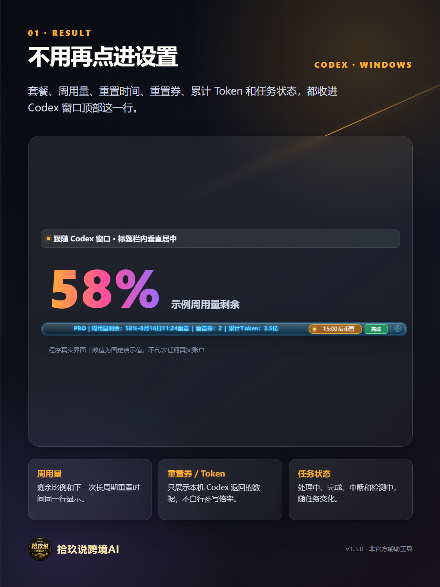
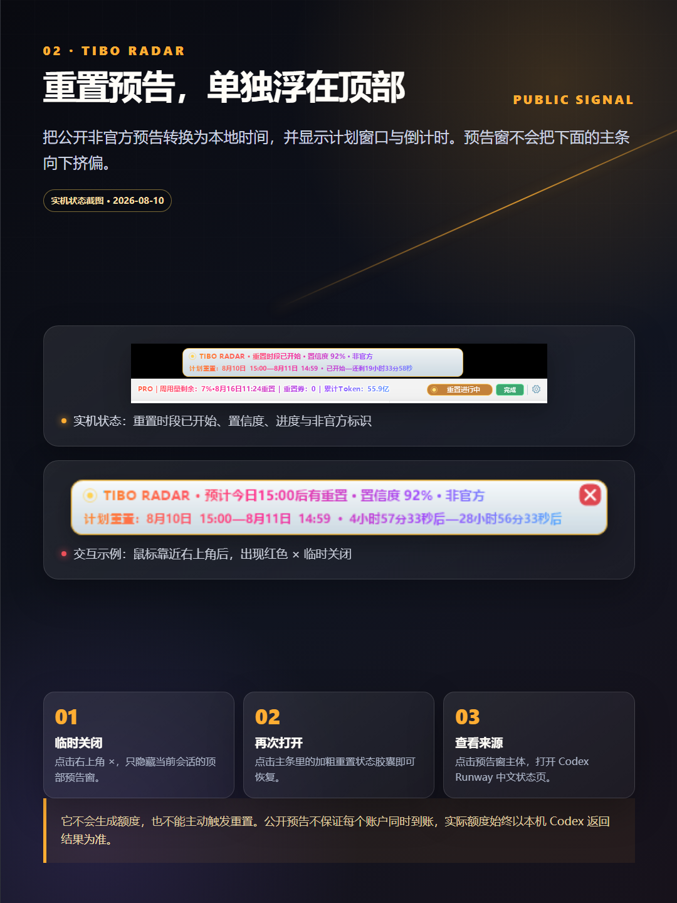
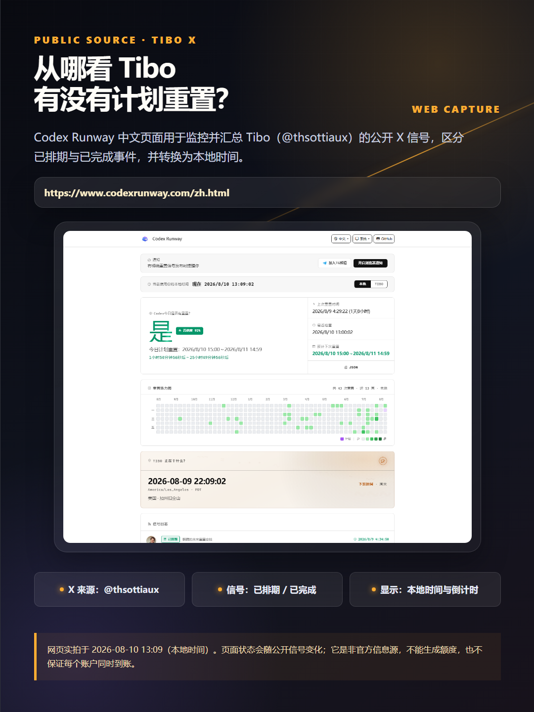
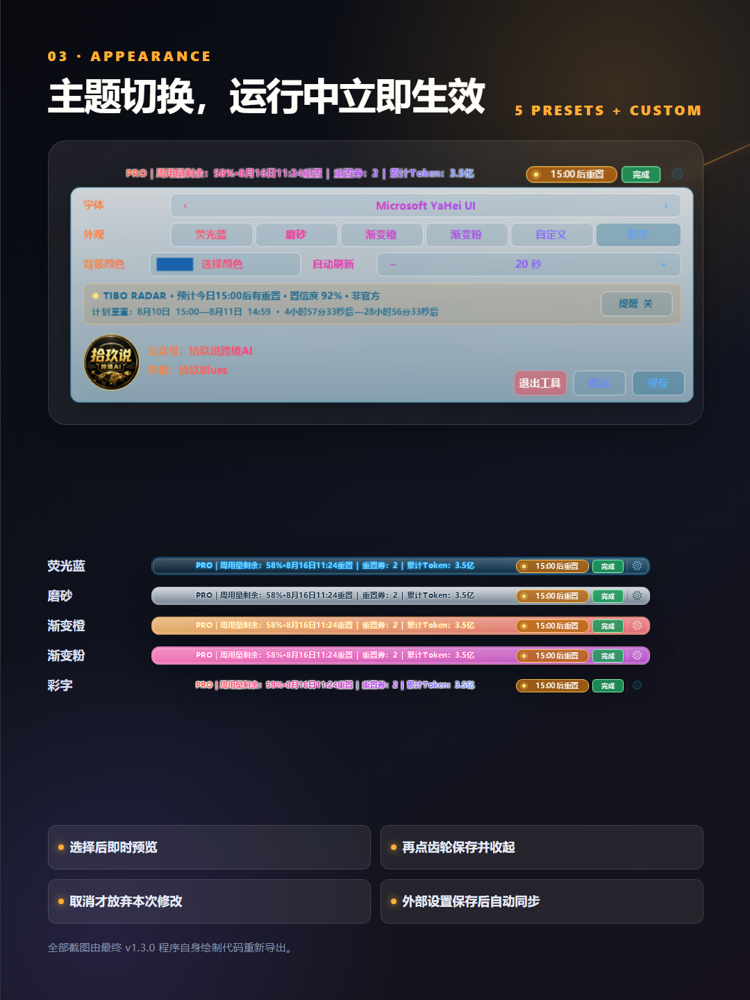
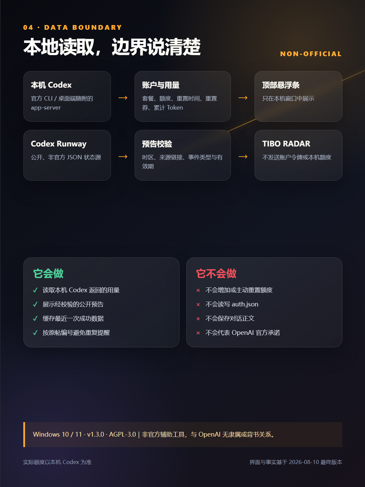

错过一次 Tibo 重置，像错失一个亿，我把预告接进了 Codex
我用 Codex 最怕碰上两种情况。
一种是周额度还没用完，第二天才看到 Tibo 发过重置公告。明明没有真少一分钱，心里还是像错失了一个亿。手里的额度原本还能多跑几个任务，消息看晚了，只能拍一下大腿。
另一种更扎心。重置卡刚用掉，任务还没跑几个，又碰上新的重置窗口。不同账户不保证同时到账，这张卡也不能简单算作浪费。可卡换来的额度还没有来得及用，心里总会冒出一句，早知道就再等等。
我想解决的就是这个“早知道”。预告早一点出现在眼前，我可以先安排今天剩下的额度，再决定重置卡要不要等一等。长任务也不用完全凭感觉开。
所以 v1.3.1 把 TIBO RADAR 接进了 Codex Usage Overlay。公开的非官方重置信号会直接显示在 Codex 窗口上方，时间按本地时区换算，还会告诉我距离计划窗口有多久。

预告早点出现，额度才好安排
有明确排期时，Codex 标题栏上方会出现一条独立预告窗，显示计划时段、倒计时和来源给出的分类置信度。计划窗口开始后，预告窗会显示“重置时段已开始”，主条同步显示“重置进行中”。
我会把它当成一个提前量。计划窗口已经很近，周额度还剩不少，就先把确定要跑的任务排进去。手里有重置卡，任务又不着急，我会多看一眼预告再决定什么时候用。没有明确预告时，照常按当前任务用，不拿猜测当到账消息。
这套东西不能替我把额度变多。它只是让公开信号早一点出现在眼前，少一次事后才知道。
鼠标靠近预告窗右上角会出现红色关闭按钮。临时关掉后，单击主悬浮条里的加粗重置状态胶囊，可以重新打开。单击预告窗主体，则会进入 Codex Runway 中文页面查看公开状态信息。

Tibo Radar 的信息从哪里来
Codex Usage Overlay 不直接访问或抓取 X。Tibo Radar 每 10 分钟只读查询 Codex Runway 汇总的公开非官方状态。Codex Runway 负责跟进并分类 Tibo（@thsottiaux）的公开 X 帖，悬浮条负责校验事件结构和时间，再换算成本地时间展示。
客户端会检查事件时间和来源链接。信息过期、状态源离线或者只剩缓存时，顶部不会把旧预告当成一条刚来的消息展示。
“预告”表示公开帖被分类为明确排期。“今日已重置”表示 Tibo 发布了完成公告。两者都不等于某个账号已经到账。图里出现的置信度，描述的是上游对事件分类的判断，不代表账户到账概率。
https://www.codexrunway.com/zh.html

额度和任务状态还是一眼看得到
主悬浮条会显示套餐、周用量剩余和下一次重置时间。有可用重置券时，它会和累计 Token 一起显示在条上。当前任务是处理中、完成还是中断，也不需要再离开正在写的代码去确认。
套餐名称和额度都以本机 Codex 返回的数据为准。这里没有自己拼出来的“20X”之类文案。
这一版也修了部分电脑在混合缩放或异常字体设置下出现的文字空白、错位和裁切。主题切换会立即预览，选择主题后再次单击齿轮或单击“保存”就会保留修改。主条和顶部预告窗会同步使用同一主题。

账户数据只留在本机
账户与用量通过本机 Codex CLI 的 app-server 接口读取。任务状态只读取本机 .codex\sessions 中的事件类型。
工具不会直接读取或写入 auth.json，也不会保存对话正文。Tibo Radar 读取 Codex Runway 的公开 JSON 状态时，不会把本机账户令牌、额度或累计 Token 发给这个状态源。
最近一次成功读取的用量、主题设置和雷达状态会保存在本机安装目录。刷新失败时，工具会继续显示上一次成功结果，也会避免重复提醒。

它只给我一个提前量
这个工具目前只面向 Windows 10 和 Windows 11。电脑上还需要安装并登录 Codex 桌面应用，或者安装并登录官方 Codex CLI。
预告窗里的倒计时只说明计划窗口，最终是否重置、实际还剩多少额度，都以本机 Codex 返回结果为准。
没有明确排期时，照常按任务需要使用。公开状态源依赖网络，状态源离线或者没有可验证来源时，顶部预告窗不会继续冒充在线新消息。
现在可以去哪里看
项目已按 AGPL-3.0 发布到 GitHub。v1.3.1 Release 提供 Windows 安装包和 SHA-256 校验文件，仓库也公开了源码、安装要求和数据边界。
Codex Usage Overlay 是非官方辅助工具，与 OpenAI 没有隶属或背书关系。Codex、OpenAI、Codex Runway 以及文中提到的第三方名称，归各自权利人所有。
如果你也遇到过额度还没安排好就错过预告，或者刚用完重置卡又碰上新的重置窗口，这条悬浮栏至少能让公开信号早一点出现在眼前。少一次“早知道就好了”，对我已经值回这次更新。
下方为“拾玖 Blues”个人微信二维码。
本文由作者基于真实项目源码、程序导出截图与本地测试资料整理，使用 AI 辅助编辑和排版；功能、图片与事实结论均由作者人工复核。